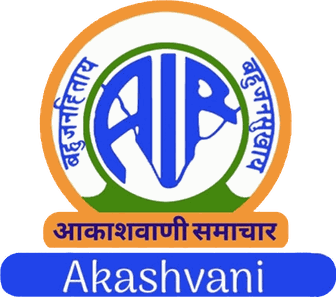
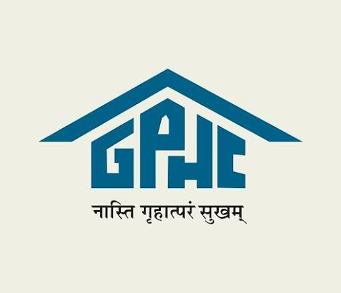
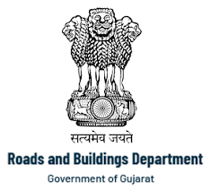
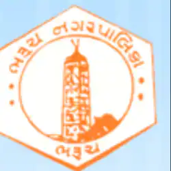
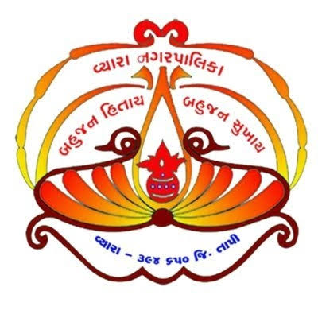

Our Clients
 Airport Authority of India
Airport Authority of India
The Record in Detail
The organisations we build for
Government bodies at every level — central, state and municipal — have entrusted the firm with their works since 1997.
Surat Municipal Corporation
Nuclear Power Corporation of India
Gujarat State Road Transport Corporation
Airport Authority of India
All India RadioSurat Urban Development Authority
Veer Narmad South Gujarat University

Gujarat State Police Housing Corp. Ltd.
Road & Building Division, GujaratKadodara Nagar Palika

Bharuch Nagarpalika
Vyara Nagar PalikaWhere a client's logo is not available, its name is shown as a name plate. Logos belong to the respective organisations.
The Record in Detail
Clients and the work done for them
Central Government
- Nuclear Power Corporation of IndiaRaw water reservoir, Kakrapar — 12,500 m3
- Airport Authority of IndiaNamed in the firm's client record
- All India RadioNamed in the firm's client record
State Government & Corporations
- Gujarat State Road Transport CorporationBus station, Bilimora
- Gujarat State Police Housing Corp. Ltd.RCC road works, Vadodara
- Road & Building Division, GujaratNamed in the firm's client record
Municipal & Local Bodies
- Surat Municipal Corporation36 of the firm's 43 listed works
- Surat Urban Development AuthoritySewage treatment plant, Singanpor
- Kadodara Nagar PalikaRCC road, Kadodara
- Bharuch NagarpalikaNamed in the firm's client record
- Vyara Nagar PalikaNamed in the firm's client record
Institutions & Private
- Veer Narmad South Gujarat UniversityUnderground service reservoir, Surat — 10 lakh litres
The full list of works executed for these clients is on the Experience page.